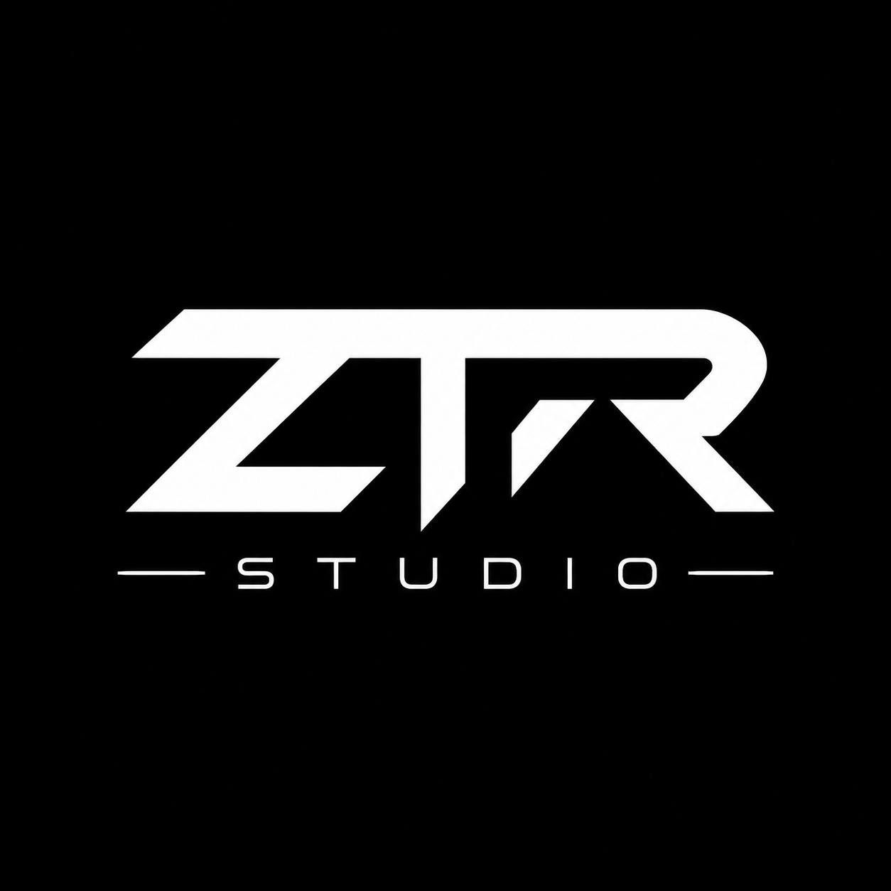

Músicas autorais
Criação de faixas próprias para fortalecer a marca e o catálogo musical da ZTR.

ZTR STUDIO Music DivisionZTR COMPANY • MUSIC DIVISION
Divisão musical da ZTR COMPANY focada em criação de músicas, beats, trilhas, identidade sonora e conteúdos sonoros para projetos digitais, jogos e marcas.
SOBRE
A ZTR STUDIO atua como a área responsável pela criação musical dentro da ZTR COMPANY. Ela pode trabalhar com beats, músicas autorais, trilhas para jogos, temas para vídeos, identidade sonora e materiais musicais para projetos próprios.
Ler apresentação completa →Som, marca e tecnologia conectados em uma única identidade.
ATUAÇÃO
Criação de faixas próprias para fortalecer a marca e o catálogo musical da ZTR.
Produção de bases para músicas, vídeos, conteúdos e projetos audiovisuais.
Temas e sons para menus, corridas, telas de vitória, trailers e experiências digitais.
Assinaturas musicais, intros, efeitos e sons que representam a marca ZTR.
PROJETOS
Espaço preparado para apresentar músicas, álbuns, beats, trilhas e conteúdos da ZTR STUDIO.